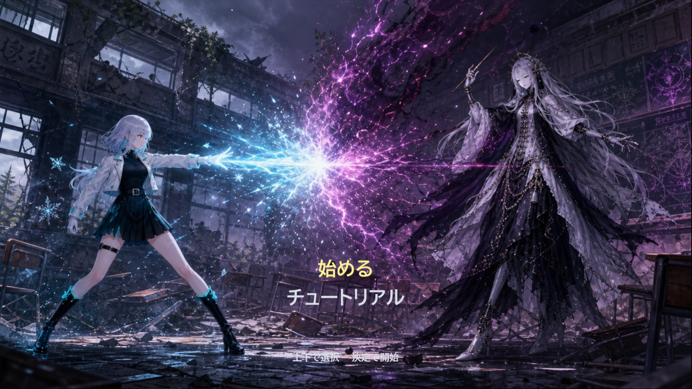
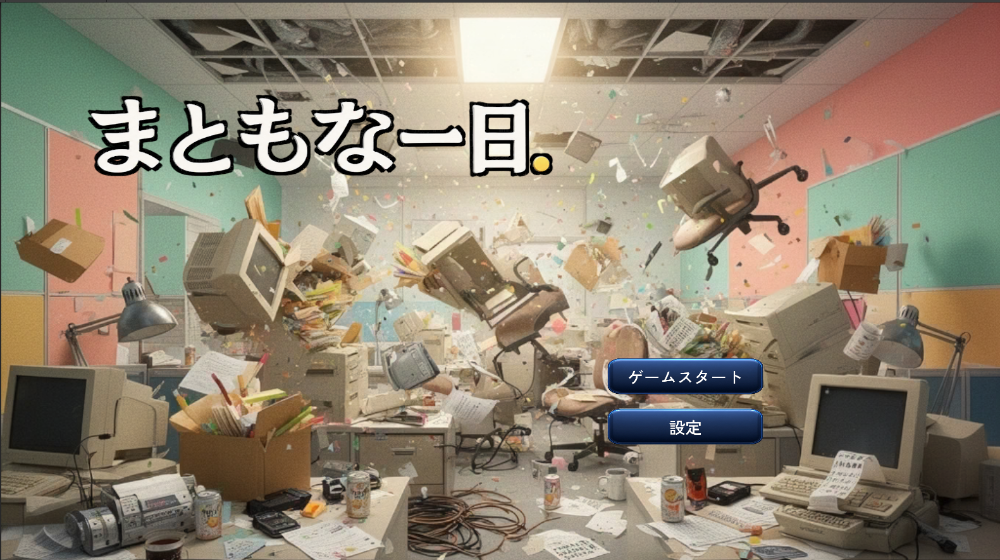
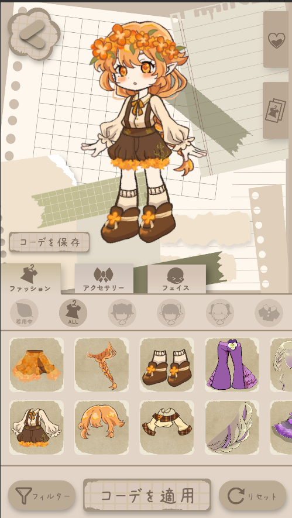
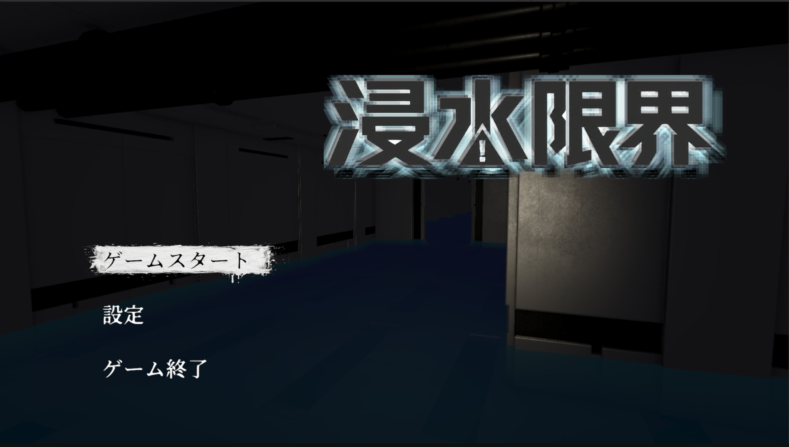
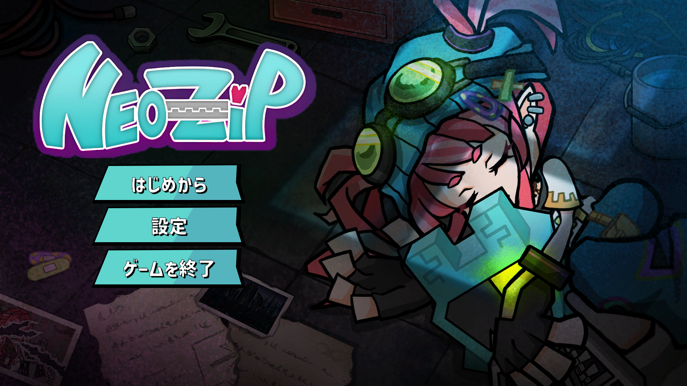
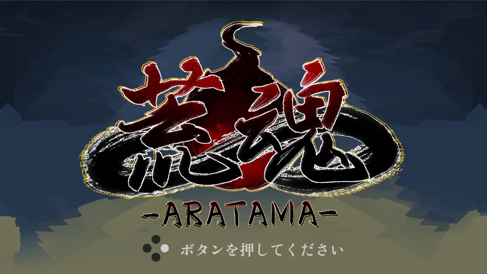
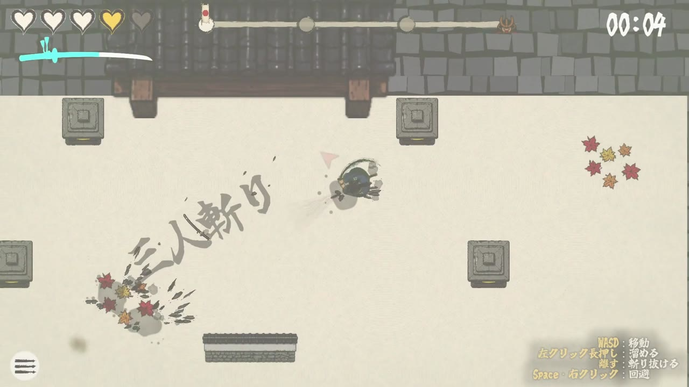
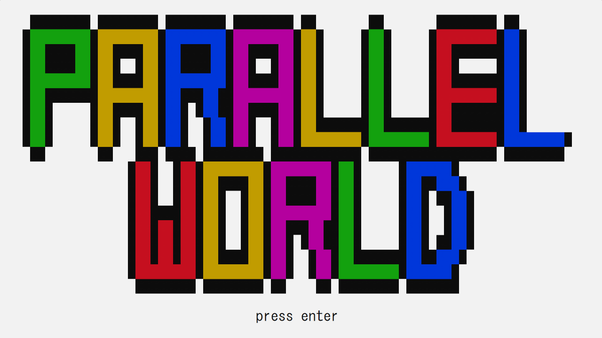
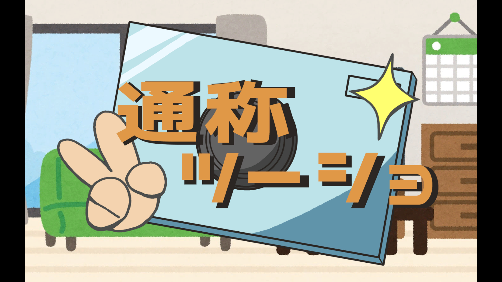
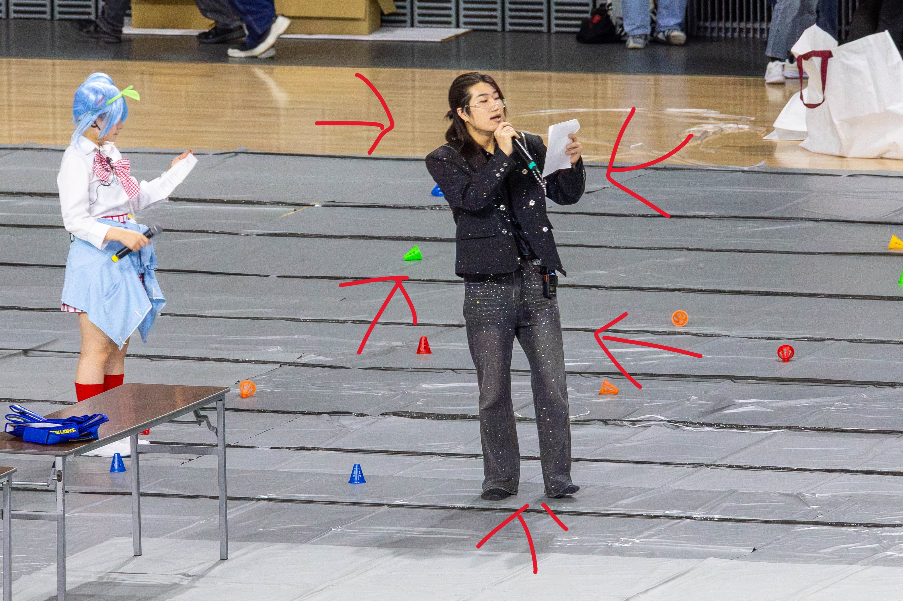

ゲームエンジニア志望
菊池凌斗
RYOTO KIKUCHI
DirectX11でフレームワークを自作するところから、Unityでのチームリードまで、「仕組みを自分の手で作って理解する」ことにこだわってゲームを作っています。
HAL東京4年制3年生 ゲーム学科ゲーム制作コース
9
開発作品数
個人開発 2・チーム開発 7
309名
運営スタッフを統括
学内最大イベント(参加者3,500名)
2
リーダー・PM経験
最大8人チームを牽引
Works
作ったゲーム。カードにカーソルを合わせると、プレイ映像が動きます。
AI利用度の見方
各作品で、自分が担当した部分にAIをどのくらい使ったかの目安です。設計・仕様・調整・動作確認は、どの作品でも自分で行っています。
- AIなしAIを使わずに自分で書いた
- AIチャットを先生に質問・相談をして、示されたコードを参考に自分で実装した
- AIエージェントをフル活用仕様を指示して、エージェント(Claude Code・Codexなど)にコードを書かせた


チーム開発
lilial.
着せ替えゲーム
- 期間
- 2026/5 ~ 開発中(8人チーム)
- 人数
- 8人
- 担当
- リーダー・企画・メインプログラマー・PM・Git管理
UnityC#
AI利用度

チーム開発
浸水限界
浸水した潜水艦から脱出する探索型ホラーゲーム
- 期間
- 2026/5 ~ 2026/9(5か月間)
- 人数
- 7人
- 担当
- リーダー・企画・メインプログラマー・PM・Git管理
UnityC#
AI利用度

チーム開発
NeoZip
ジッパーを引いて風景を開閉し、道を切り拓いていく2Dアクションゲーム
- 期間
- 2026/3 ~ 2026/7 (5ヶ月間)
- 人数
- 10人
- 担当
- メインプログラマー・Git管理
UnityC#
AI利用度


CyberAgent インターンチーム開発
居合城攻め
見下ろし2Dの居合アクションゲーム(溜めて離すと、斬りながら前へ進む)
- 期間
- 2026/10/19 ~ 2026/10/30 (2週間・CyberAgentインターン)
- 人数
- プログラマー5人
- 担当
- チームリーダー・ボス/演出/チュートリアル/タイトルUI・config設計・最終発表
UnityC#
AI利用度

HEW銀賞受賞
チーム開発
通称ツーショ
2Dハイスピード憑依アクションゲーム
- 期間
- 2025/3/17 ~ 2025/3/19 (3日間)
- 人数
- 3人
- 担当
- 企画・プログラム
UnityC#
AI利用度
About
自己紹介
ゲーム開発を専門とするプログラマーです。
DirectX11では衝突判定・ボスAI・オーディオエンジンまで一から自作し、Unityではセーブ設計や物理まわりの地味だけど厄介なバグを、原因が分かるまで追いかけるタイプです。
チーム開発では毎回リーダー・PMを任されることが多く、企画からスケジュール管理、Gitの運用まで含めてチーム全体を見渡しながら、自分自身でも一番難しい部分のコードを書くようにしています。
学内コンテストでの受賞経験もあり、「面白い」を形にするための技術研鑽を日々続けています。
Skills
使える言語・ツール
プログラミング言語
ゲーム開発
DirectX11
Unity
 Unreal Engine 5
Unreal Engine 5
ウェブ技術
Tools
Visual Studio
 VSCode
VSCode
 GitHub
GitHub
その他ツール
Maya
Blender
 Photoshop
Photoshop
資格・実績
Activities
ゲーム制作以外の活動
学生レ・クリエーション - 統括

約3,500名の学生が参加する学内最大規模のレクリエーションイベントにて、学生側統括2名のうち1名を担当しました。
5月から12月1日の本番までの約7ヶ月間、8名の統括陣をまとめながら、
309名の運営スタッフを率いて企画・運営を推進。企画部署の責任者として催しの立案を主導し、
当日は全体の進行設計から司会・進行、想定外のトラブル対応までを担いました。
長期プロジェクトのスケジュール管理と部署間の調整を通じて、チームを動かす力と現場での判断力を養いました。
アシスタントスタッフ活動
学内のアシスタントスタッフとして2年間活動し、体験入学の運営サポートを中心に担当しました。
2年次には学科リーダーとして、体験入学当日の学科責任者を務めるとともに、
授業準備マニュアルの作成や後輩の育成にも取り組みました。
属人的だった業務を仕組みとして整理し、次の世代へ引き継ぐ経験から、
チーム全体の成果を底上げする視点を学びました。
クラス委員長 - 3年連続
約40名のクラスで、1年次から3年次まで3年連続してクラス委員長を務めました。
出席確認や号令、配布物の伝達といった日々の運営に加え、資格取得に向けた勉強会をクラスで企画・開催。
先生とクラスをつなぐ窓口も担い、出席状況が思わしくない学生の相談に乗るなど、一人ひとりの事情に向き合う場面もありました。
3年間、学年やクラスの違う先生・学生と関わり続けたことで、初対面の相手ともすぐに打ち解けて話せるようになりました。
サイバーエージェント インターン - チームリーダー
2026年10月19日から30日までの2週間、株式会社サイバーエージェントのインターンシップに参加し、プログラマー5人のチームでゲームジャムに取り組みました。
お題「進む」から、見下ろし2Dの居合アクション『居合城攻め』(Unity)を10日間で制作。チームリーダーとしてチームをまとめ、最終発表も担当しました。
開発ではボス・演出・チュートリアル・タイトルUIを担当し、ゲームの数値を決めるconfigを設計。コードの実装はすべてAIエージェントに任せ、設計・仕様・調整・動作確認に集中する進め方を実践しました。
イラスト素材はほぼすべてAIで作り、世界観が揃うよう調整しました(音声素材も一部制作)。